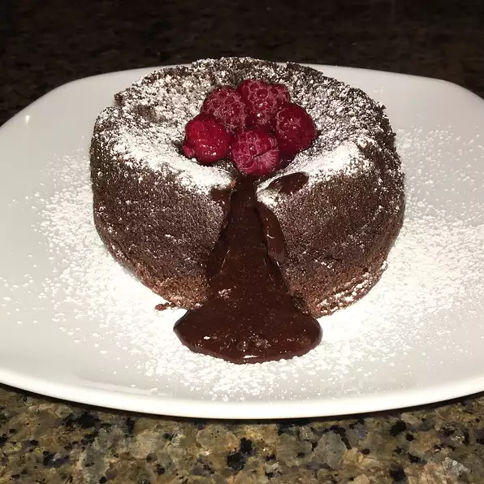

Back To Home
Petit Gateau

Description
Dessert is individual molten chocolate cakes. They're simple and elegant, and they bake in under 10 minutes in a standard muffin pan. The best part about these little beauties is that the cake batter is extremely forgiving: You can make it up to six hours before you plan to serve the cakes. Fill the pans with batter and refrigerate, but remember to remove the pan far enough in advance of baking to let the batter return to room temperature. Because they bake for only 8 to 10 minutes, pop these little cakes into the oven as you're clearing the main course dishes and making coffee.
Ingredients
1 cup unsalted butter or unsalted margarine*
8 ounces semisweet chocolate chips, or bars, cut into bite-size chunks
4 teaspoons flour (or matzo meal, ground in a blender to a fine powder)
8 extra-large paper muffin cups (or use regular paper muffin cups, which will make 12 cakes)
Garnish
1 (6 ounce) container raspberries, barely moistened and rolled in about
½ cup sugar right before serving
Directions
Melt butter and chocolate in a medium heat-proof bowl over a saucepan of simmering water; remove from heat. Beat eggs, sugar and salt with a hand mixer in a medium bowl until sugar dissolves. Beat egg mixture into chocolate until smooth. Beat in flour or matzo meal until just combined. (Batter can be made a day ahead; return to room temperature an hour or so before baking.)
Before serving dinner, adjust oven rack to middle position; heat oven to 450 degrees. Line a standard-size muffin tin (1/2 cup capacity) with 8 extra-large muffin papers (papers should extend above cups to facilitate removal). Spray muffin papers with vegetable cooking spray. Divide batter among muffin cups.
Bake until batter puffs but center is not set, 8 to 10 minutes. Carefully lift cakes from tin and set on a work surface. Pull papers away from cakes and transfer cakes to dessert plates.
Top each with sugared raspberries and serve immediately.
Back To Home